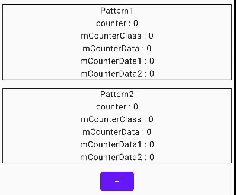
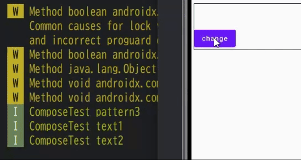

| 作成日 | 2025/03/24 |
| 最終更新日 | 2025/05/26 |
StateFlowやComposableについて詳しくなかったので調べてみます。
まず最初に困ったことを確認します。
数値をいくつか表示し、+で加算するプログラムです。ボタンを押すと一部の数値が更新されてます。
表示している内容は以下のクラスです。
作成したコードは、こちらのリポジトリにあります。
KmpViewModel.ktclass KmpViewModel { var counter = 0 val mCounterClass = mutableStateOf( CounterClass() ) val mCounterData = mutableStateOf( CounterData() ) val mCounterDataVar1 = mutableStateOf( CounterDataVar() ) val mCounterDataVar2 = mutableStateOf( CounterDataVar() ) ~省略~ }
それぞれのクラスは以下の通りです。
Count.kt
class CounterClass(
var count: Int = 0,
)
data class CounterData(
val count: Int = 0,
)
data class CounterDataVar(
var count: Int = 0,
)
上から
になっています。
valのデータクラスのcountを変更するにはcopyが必要で、varのデータクラスのcoutを変更するのはcopyでも上書きでもどちらでもできます。
dataクラスについては別途調べたのでここでは省略します(これ)。
ボタンを押した時に呼ぶコードは以下の通りです。
var1は「countを直接変更」、var2は「copyでvalueを上書きする」といった違いがあります。
どれも共通で値を1加算します。
KmpViewModel.ktclass KmpViewModel { ~省略~ fun addCount() { counter++ mCounterClass.value.count++ mCounterData.value = mCounterData.value.run { copy( count = count + 1 ) } mCounterDataVar1.value.count++ mCounterDataVar2.value = mCounterDataVar2.value.run { copy( count = count + 1 ) } } }
全部同時に加算しているはずなのに1と2で表示内容が変わってしまいます。
さぁ、困りました。
パターン1のコードは以下の通りです。すべての数値を同じ関数で取得しています。
Pattern1.kt@Composable fun Pattern1( viewModel: KmpViewModel, modifier: Modifier = Modifier, ) { Column( modifier = modifier, horizontalAlignment = Alignment.CenterHorizontally, ) { Text("Pattern1") Text( text = "counter : ${viewModel.counter}" ) val mCounterClass by viewModel.mCounterClass Text( text = "mCounterClass : ${mCounterClass.count}" ) val mCounterData by viewModel.mCounterData Text( text = "mCounterData : ${mCounterData.count}" ) val mCounterDataVar1 by viewModel.mCounterDataVar1 Text( text = "mCounterData1 : ${mCounterDataVar1.count}" ) val mCounterDataVar2 by viewModel.mCounterDataVar2 Text( text = "mCounterData2 : ${mCounterDataVar2.count}" ) } }
対して、pattern2です。
それぞれ独立した関数になっています。
Pattern2.kt@Composable fun Pattern2( viewModel: KmpViewModel, modifier: Modifier = Modifier, ) { Column( modifier = modifier, horizontalAlignment = Alignment.CenterHorizontally, ) { Text("Pattern2") CounterComponent( viewModel = viewModel, ) CounterClassComponent( viewModel = viewModel, ) ~~ 省略 ~~ } } @Composable fun CounterComponent( viewModel: KmpViewModel, ) { Text( text = "counter : ${viewModel.counter}" ) } @Composable fun CounterClassComponent( viewModel: KmpViewModel, ) { val mCounterClass by viewModel.mCounterClass Text( text = "mCounterClass : ${mCounterClass.count}" ) } ~~ 省略 ~~
上記の話は単純でした。mutableStateを利用していると、値を変更したときcomposeに通知されます。以下Android公式の資料[1]からの引用です(このへん)。
安定しているが可変である型の代表例は、Compose の MutableState 型です。値が MutableState に保持されている場合、State の .value プロパティに対する変更は Compose に通知されるため、状態オブジェクトは全体として安定していると見なされます。
前半は胸を張って説明できるほど理解してませんが、後半が何を言いたいかはわかります。
通知が来たComposeは再度処理が走ります[2](このへん)。
パターン1は全てが同じ階層にあるので、どれか1つでも通知が来たら、それぞれのデータが通知を送るかどうかによらず、全てのデータの最新情報にアクセスします。よって、全てのデータが同時に更新されます。
対してパターン2では、通知が来たComposeのみ処理が走ります。、mutbleStateを利用していて、なおかつvalueを上書きしている2つのみ数値が変わるということになります。
これがデータ更新が画面に反映されることもあれば、されないこともあることの原因のようです。
画面を更新する場合は、mutableStateのvalueを上書きするように気をつけたいですね。
公式ドキュメント [1]を見ていたら、興味深い記述を見つけました(このへん)。
再コンポジション中に、対象となるコンポーザブル関数の入力が前回のコンポジションから変更されていない場合、その関数の実行が完全にスキップされることがあります。
なんと、不要な呼び出しは勝手に回避してくれるようです。すごい。
基本的な挙動を試してくれた記事がQiita[3]にあるので、実際の動きが気になる方はこちらも確認してみてください。
それはそれとして、自分でもやってみたいので実装します。というか、実際に作っているゲームで困ったので原因を特定せねばなりません。
viewModel.ktval uiState = mutableStateOf( UIState( TextData1(""), TextData2(""), ) ) fun updateUIState() { uiState.value = uiState.value.let { it.copy( textData2 = it.textData2.run { copy(text = text + "a") } ) } }
layout.kt@Composable fun Pattern3( viewModel: KmpViewModel, modifier: Modifier = Modifier, ) { val uiState by viewModel.uiState println("ComposeTest pattern3") Column(modifier = modifier) { Text1(uiState.textData1) Text2(uiState.textData2) Button(onClick = { viewModel.updateUIState() }) { Text("change") } } } @Composable private fun Text1( textData1: TextData1, ) { println("ComposeTest text1") Text(textData1.text) } @Composable private fun Text2( textData2: TextData2, ) { println("ComposeTest text2") Text(textData2.text) }
ボタンをクリックすると、textData2にaが追加される状態です。この状態でボタンを押してログを確認すると次の通りです。
なんと、text1も呼び出されているではありませんか。スキップしてくれるなんて嘘だったのか!!
……と言いたくなりますが、スキップされるには条件がありました。公式[1]からの引用です(この辺)。
コンポーズ可能な関数は、次の場合を除きスキップできます。
・関数に Unit 以外の戻り値の型があります
・関数に @NonRestartableComposable アノテーションが付いているか、 @NonSkippableComposable
・必須パラメータの型が不安定です
引用と言いつつ、ちょっと整形してます。
textDataの中身を確認してみましょう。
TextData1.ktdata class TextData1( val text: String, val someList:List= emptyList(), )
なんと、こっそりリストが入っているではありませんか。
list型は安定した型とはみなされないため、TextData1も安定した型とみなされずに、これでは毎回呼び出されてしまっても不思議ではありません。
というわけで、TextData1クラスに@Stableをつけて再挑戦します。
無事にtext2だけ呼ばれるようになりました。
そのまま起動したらうまく行かなかったのですが、先駆者の知恵 [2]を借りて、クリーンビルドしたら通るようになりました。
以上、Composeについて色々調べました。
『更新を省略できていい』という話はなんとなく知っていたのですが、詳細までは知らなかったのでいい機会になりました。これで今作ってるゲームのUIStateを作るリファクタを進められそうです。
今回見つかった課題は安定した型が何かをもう少し調べることですかね。途中で胸を張って説明できないとも書きましたし。あとは、UIStateについても調べて書いてみてもいいかもしれません。
とまぁ、今後の課題も見つかったので今回はこの辺で。
ではまた。